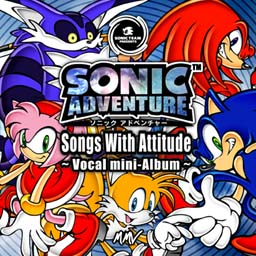

| Sonic Adventure's Vocal Mini Album to be released! | |
|  |
SONIC Adventure Vocal mini-Album "Songs With Attitude" |
|
Release date: December 2, 1998 Price: 2,100 yen Product number: MJCA-00039 Distributed by: Marvelous Entertainment Inc. Distributed by: Pony Canyon Inc.
| |
|
We've decided to release a vocal mini-album of the theme songs from Sonic Adventure, the latest Sonic Team title, ahead of the game! It's a great collection of songs for the new, realistic Sonic world.
We're almost to the game's release, but listen to this and stay tuned! | |
| - Songs - |
| [It Doesn't Matter ...Theme of "SONIC"] |
| TNT vocalist Tony Harnell's Sonic theme is a song about his attitude! The key words are positive and speedy. |
| [My Sweet Passion ...Theme of "AMY"] |
|
For those who want to listen to energetic and aggressive songs. Please enjoy funny girl Amy with her cute girl vocals. |
| [Lazy Days ~Livin' in Paradise~ ...Theme of "BIG"] |
| I played this song at the TGS '98 fall concert. If you close your eyes and listen to the song, you will find yourself in the paradise of Big and Froggy. It's sung by Ted Poley, the former vocalist of Danger Danger. |
| [Believe In Myself ...Theme of "MILES"] |
| The key word for Tails is independence, not just following behind Sonic. This is a message song for him. |
| [Unknown from M.E. ...Theme of "KNUCKLES"] |
| He and Sonic acknowledge eachother, but see eachother as rivals? Knuckles is that kind of guy. He's cool in a different way, but hot on the inside, and this is the perfect theme for him. |
| [Open Your Heart ...Main Theme of "SONIC Adventure"] |
|
The main theme of this year's event was this song! There have been many versions,
such as the presentation version sung by Eizo Sakamoto of Animetal, and the live version sun by Horie of Bow Wow,
but this finished version is sung by Johnny Gioeli, the former vocalist of Hardline. You may already be familiar with CF or Power Play? Here are the lyrics to this song about the relationship between Sonic, Chaos, and Eggman. |